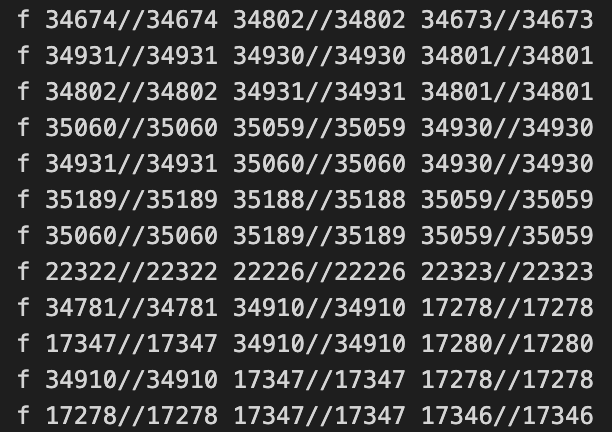
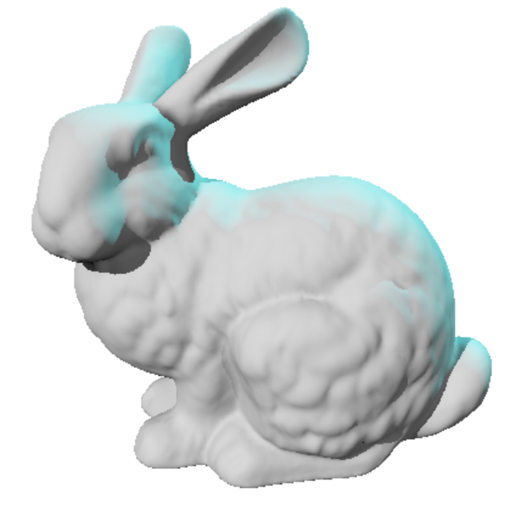

Given a set of triangles, implement Ray-Tracing to generate a 3D figure.
Implement intersection test between a ray and a set of triangles.
One function should find the closest intersection with a triangle along
the ray. The ray is given by its start point p and direction d. A triangle
is represented as an array of three vertex indices. The position of each
vertex can be looked up from the vertex array via the vertex index.
triangles points to the first element of an array of num_triangles
triangles. If a triangle was hit, return the coordinates of it.
We also had to implement Phong-Shading, which is a special treatment of
color manipulation.
For example the bunny object was split into to different files. First, the .obj file, which explained the main concept of the bunny, like color, light conditions etc. Then there was a .json file, where the coordinates of the triangles where stored. The nodes had 3 different coordinates, consisting of x-Axis, y-Axis and z-Axis.
The IDE was not that important, so I chose Visual Studio Code (vsc), since it is my main text editor.
I programmed on MacOS and used the terminal of linux to compile my code. My compiler machine was based
on a Linux distro named KDE-neon. We had to write
a Math class, for using 3D-vectors, matrices and similar math structures.
The whole purpose of the program was, to pass a subject for my Degree in Computer Science. the subject was named "Computergrafic", where I made a other small projects, consisting of a 3D generated picture for a Cardboard. The main Goal of the Subject was, to teach the fundamentals of Computergrafic and create a good understanding of modern grafical systems.
I learned the fundamentals of Computergrafic. How Ray-Tracing works and how computergames manage to make a good visual representation of colors, shadows and much more.
Given Nodes of the triangles (only a few of them)
Output of Ray-Tracing with Phong-Shading.
